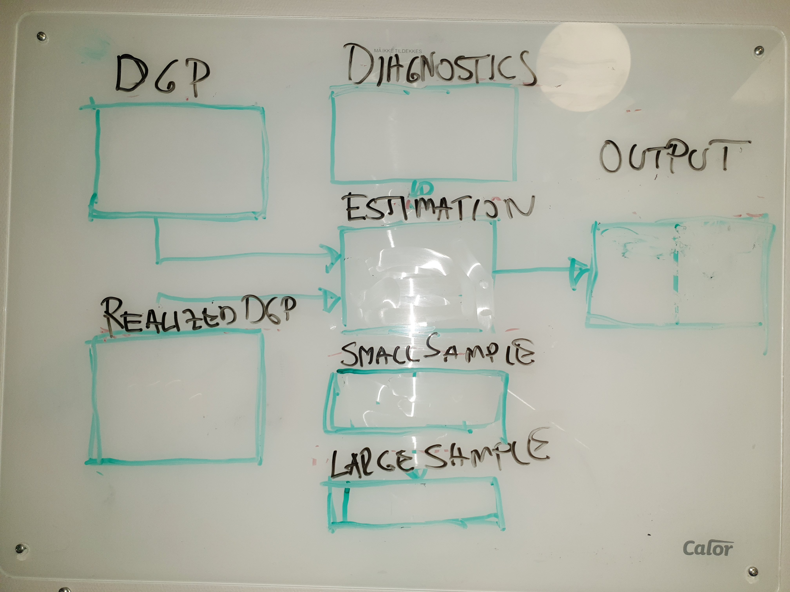

Data sample (realized \(\tilde{}\) DGP)
\[\begin{equation}
\tilde{\textbf{X}}=
\begin{bmatrix}
\tilde{x}_{L1} & ... & & \tilde{x}_{Lk} \\
... & & & ... \\
\tilde{x}_{11} & ... & & \tilde{x}_{1k} \\
\tilde{x}_{21} & & & \tilde{x}_{2k} \\
... & & & ... \\
\tilde{x}_{nt} & ... & & \tilde{x}_{nk} \\
\end{bmatrix}
\end{equation}\]
\[\begin{equation}
\tilde{\textbf{x}}_{t}=(\tilde{x}_{1t}, \tilde{x}_{2t},...,\tilde{x}_{kt})
\end{equation}\]
Data generating process (DGP) and its regression model
- \(\{(x_{1t},x_{2t},...,x_{kt},y_{t});t=1,2,..,,n\}\)
- Model specifications (examples):
- Static (contemporanous model)
- Finite distributed lagged model
- Model suggestions 1:
- Functional form
- Dummy
- Index number
- Model suggestions 2:
Diagnostics
| Violation |
TS.3/TS’.3 |
TS’.1 |
TS.5/TS’.5 |
TS.4/TS’.4 |
TS.3/TS’.3 |
| Detecting |
Graphical |
Graphical/(formal) |
Testing with or without strictly exogenous regressors |
Testing |
Economic theory |
| Correcting |
(1) Inclulde time trend, (2) more lags |
First differentiating (I(0) \(\sim \Delta\) I(1)) |
Transformation/Robust standard errors (HAC) |
Transformation/Robust standard errors |
IV-approach |
Model estimation
Method
\[\begin{equation}
\underset{\hat{\beta}_{j} \text{for} j=0,1,...,k}{\text{OLS: Min RSS}}
\end{equation}\]
Properties
Properties finite sample (TS.1-TS.6)
| TS.1: |
Linear in its parameters |
v |
v |
v |
| TS.2: |
No perfect collinarity |
v |
v |
v |
| TS.3: |
E(\(u_{t}\)|\(\textbf{X}\))=0 |
v |
v |
v |
| TS.4: |
Var(\(u_{t}\)|\(\textbf{X})=0\)
|
|
v |
v |
| TS.5: |
Corr(\(u_{t}\),\(u_{s}\)|\(\textbf{X})=0\)
|
|
v |
v |
| TS.6: |
\(u_{t} i.i.d. \sim N(0,\sigma^2_{u})\) |
|
|
v |
Properties large sample (TS’.1-TS’.5)
| TS’.1: |
TS’1=TS1+Stationarity+Weakly dependency |
v |
v |
| TS’.2: |
No perfect collinarity |
v |
v |
| TS’.3: |
E(\(u_{t}\)|\(\textbf{X}_{t})=0\)) |
v |
v |
| TS’.4: |
Var(\(u_{t}\)|\(\textbf{X}_{t})=\sigma^{2}\)
|
|
v |
| TS’.5: |
Corr(\(u_{t}\),\(u_{s}\)|\(\textbf{X}_{t})=0\)
|
|
v |
Estimation results
Non-robust
| Predictions |
v |
|
|
\(R^{2}\) and its adjusted |
v |
|
| Std |
|
x |
| t-tests |
|
x |
| F-test |
|
x |
Robust
| Predictions |
v |
|
|
\(R^{2}\) and its adjusted |
v |
|
| Std |
|
v |
| t-tests |
|
v |
| F-testing |
|
v |